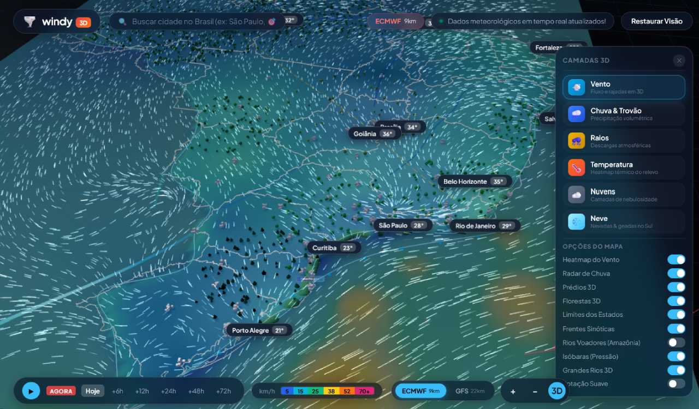
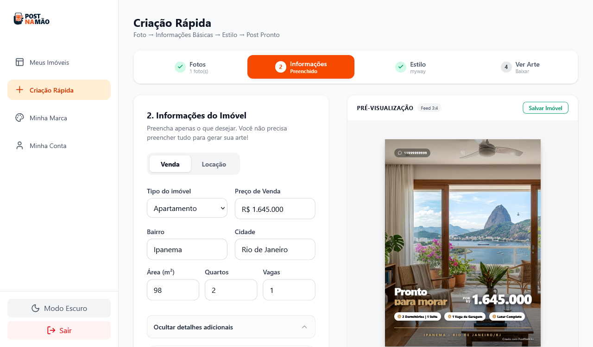

Disponível para projetos remotos (Global & Brasil)
Vinicius Ledesma
Creative Technologist & AI Prototyper
Construindo a ponte entre intuição de produto, inteligência artificial generativa e interfaces táteis de alto padrão. Criador de aplicações interativas em 3D e webapps rápidos com vibecoding.
8+ Anos
Criação Visual & Design
C1 Fluente
Inglês Profissional Avançado
0 Atrito
Do Insight ao Deploy Real
Em Produção (Live)
PROJETO 01 / 02
Windy 3D
Visualizador Climático Interativo & Rios Voadores
Reinventando a meteorologia digital em uma experiência tridimensional imersiva diretamente no navegador. Dados climáticos globais dos modelos ECMWF e GFS traduzidos em fluxos dinâmicos de vento, relevo, radar de precipitação e acompanhamento térmico.
-
✦
Globo 3D interativo em WebGL com iluminação solar orbital em tempo real.
-
✦
Camada dos Rios Voadores da Amazônia e fluxo volumétrico de nuvens.
-
✦
Busca preditiva de cidades brasileiras com curva de temperatura (sparkline 24h).
-
✦
Controle de linha do tempo meteorológica e alternância entre ECMWF e GFS.
Three.js
WebGL
JavaScript Modular
CSS Glassmorphism
ECMWF / GFS Models
Vercel Deploy

🌪️ Three.js WebGL
•
Ver Estudo ↗
Protótipo Funcional
PROJETO 02 / 02
Post Na Mão
Webapp Imobiliário com IA & Vibecoding
Exterminando a "síndrome do panfleto de supermercado" no mercado imobiliário. Uma ferramenta ágil para corretores gerarem peças gráficas refinadas e descrições otimizadas para o Instagram com inteligência artificial diretamente do celular.
-
✦
Geração e diagramação em tempo real: o corretor digita e a arte surge na hora.
-
✦
5 templates de design editorial de luxo pré-configurados sem atrito visual.
-
✦
Gerador de copy inteligente com IA generativa para legendas do Instagram.
-
✦
Prototipado em tempo recorde via Google AI Studio (Vibecoding).
Google AI Studio
Engenharia de Prompts
LLMs Generativos
Vibecoding
UI / UX Design
Mobile-First

📱 Google AI Studio
•
Ver Estudo ↗